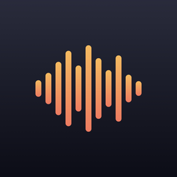
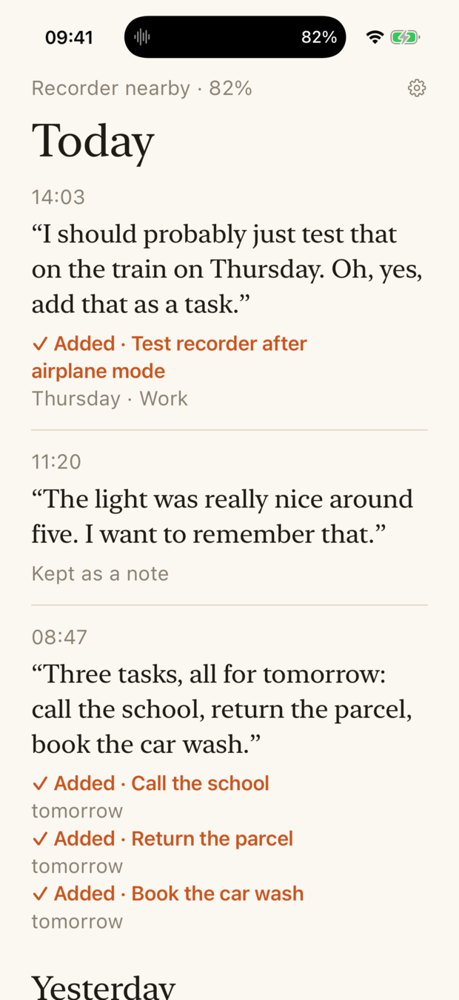
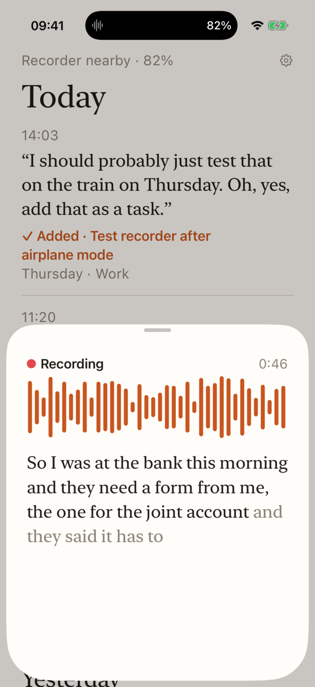
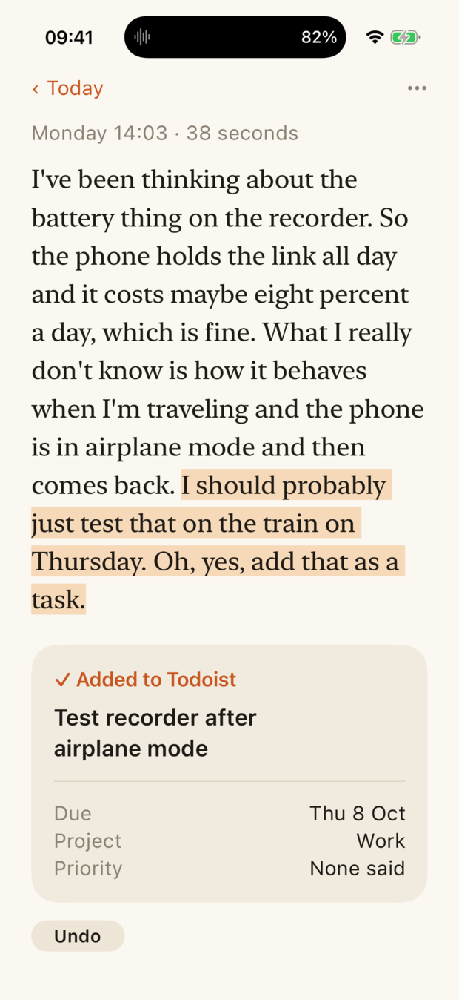

I should probably just test that on the train on Thursday. Oh, yes, add that as a task.
✓ Added · Test recorder after airplane mode
Thursday · Work

QuasiQuasi is a small experiment in computing without a screen. You speak into a pocket recorder. Your phone stays in your bag, dark and locked. A few notes of wood and chime tell you that you were heard, understood, and that the thing you asked for is done.
If you ever want to check, there is a logbook. Most days you won't open it.
What it does
Press the button on the recorder and talk the way you think: rambling, correcting yourself, changing your mind. Somewhere in there you say "add that as a task", or list three things for tomorrow. When you stop, your phone has already transcribed the note, worked out what you asked for, and put it in your to-do list.
I should probably just test that on the train on Thursday. Oh, yes, add that as a task.
The light was really nice around five. I want to remember that.
Three tasks, all for tomorrow: call the school, return the parcel, book the car wash.
The sound language
If you are not going to look, you have to be told. Quasi speaks in a few short sounds, each with a matching tap, and you learn them in a day.
Wood is the machinery. Your note arrived; it was written down. A soft chime is the conversation. Starting a recording asks a question, two rising notes left hanging. The end answers it, and the answer says what happened.
A step that goes well climbs; a step that fails falls and rings longer, and nothing follows it. The sounds follow the phone's silent switch, and the taps say the same thing: one short tap for each good step, two long ones for a failure.
The logbook
The app is where you check what happened, not where things happen. It is a book of what you said and what was done about it: your words in a serif, the app's in plain type, and one orange that only ever means "I did something".



Why
The tools that can finally understand what we mean still ask us to stare at glass to use them. Quasi is a guess at the other direction: a button to press, your own voice, and sound coming back. The recorder is the interface. The phone is a quiet machine in a bag.
It is called Quasi because you speak as if someone were listening.
What it is, plainly
The source is on GitHub, under the GNU General Public License, version 3.